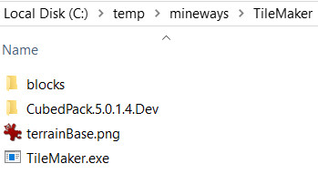
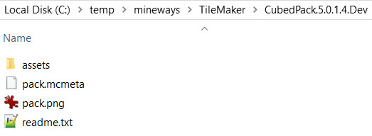

Using Textures in Mineways
You can apply resource packs that modders have developed to models you export from Mineways. In fact, Mineways comes with a few, ready for you to use - here's more information.You can go farther, though, and add your own favorite resource pack to models you export. In a perfect world, you would just point Mineways at a resource pack (also once known as a texture pack). Mineways would then apply the textures in that pack to the models you export. If it didn't find a new texture in the resource pack, it would get the basic Minecraft texture instead and use that.
Alas, life is not perfect. Mineways relies on a single, giant texture that contains all the block face textures, which we'll refer to as "tiles." This single image, which we call the "terrain file," has roots in the early design of Minecraft itself, which used to use the same exact single texture. Minecraft now stores a separate texture tile for each block face; Mineways has kept with the single, giant texture of doom.
This single terrain file has some advantages, such as being a single PNG file vs. a giant set of individual texture images. If
One warning: 512x512 and larger tiles from a texture resources packs may cause failures within Blender and other rendering packages. You You can find resource packs on such sites as this, this, and this; google around for many more. Best ones? Here's what PC Gamer thinks. TileMaker is a command-line utility for making a terrainExt.png file, which is the file that Mineways uses to add textures to surfaces. Note: currently the program works only on the PC. I have heard you can run it through WINE or some emulator (which should work but costs money).
TileMaker works by using a few different textures from Minecraft and from a texture pack to create a new texture to feed to Mineways. Here's one way to set things up (but there's an even easier method if you use a CMD window or .bat file, explained below):
- Locate TileMaker.exe and the file terrainBase.png. The terrainBase.png has the default textures for when replacement tiles in your texture pack are not found.
- In this directory where TileMaker.exe is located, make a directory called "blocks". This is where you'll put the textures you want to use instead. Copy all files from your texture pack's assets\minecraft\textures\block (or "blocks," for 1.12 and earlier) to this directory.
- While you're at it, copy "barrier.png" to the block folder from assets\minecraft\textures\items or wherever it's located.
- Copy the "chest" folder itself at assets\minecraft\textures\entity\chest to the "blocks" folder.
- Double-click TileMaker and the file terrainExt.png should be created. Cross fingers.
- TileMaker.exe and terrainBase.png should be in the same directory (normally)
- "blocks" directory filled with files from assets\minecraft\textures\block in the .jar and perhaps the barrier.png file from assets\minecraft\textures\items
- Under the "blocks" directory have a "chest" directory with the contents of the assets\minecraft\textures\entity\chest .jar directory
A problem with double-clicking TileMaker.exe is that TileMaker will run, popping up a window briefly and then disappearing. There are often warnings and sometimes errors, which you will miss. Better is to use the CMD window. In the CMD window, go to the directory where TileMaker is located (using the "cd" command), then type "TileMaker" and see what warnings and errors you get. Any error will halt execution, at which point you'll want to fix the error and run again. You can usually use the "up arrow" key to bring up the last command you typed in, e.g., "TileMaker".
A little background might help. Minecraft itself and all resource packs have their own block image files. You'll find your Minecraft executable in a directory such as "C:\Users\YourName\AppData\Roaming\.minecraft\versions\1.10.2". If you unzip the Minecraft jar file there, e.g., 1.10.2.jar, you'll find the tiles used in the jar directory "assets\minecraft\textures\block" (or "blocks," for 1.12 and earlier). They have names such as "anvil_base.png" and "cake_side.png". These are what Minecraft uses to display blocks, and what the TileMaker utility uses to make the terrainExt.png used by Mineways.
What TileMaker does by default is simple: it reads in the terrainBase.png file, overlays it with any tiles in the "blocks" subdirectory (replacing the originals), extracts the chests from "blocks\chest", then writes out this new image as terrainExt.png. TileMaker's main task is to resize all tiles to the largest tile found. For example, if you had a bunch of 16x16 size block tiles in the "blocks" directory, along with one large 64x64 tile, the output terrainExt.png would have all its tiles be 64x64 in size. Chests' sizes are ignored during this resizing calculation.
TileMaker does do some special processing. The "chest" subdirectory normally has three chest tiles: ender.png, normal.png, and normal_double.png, to generate chest tiles - see the _readme.txt file there. The main directory has some "guide" tiles that are not standard Minecraft tiles. These have the prefix "MW_" and are mostly self-explanatory (or search this page for more information).
If you use the command line, or put your command line in a .bat file, there are many options available for doing more elaborate operations (such as forcing a particular tile size, or using a different input directory or output file name). In the command line you use "cd" to go to the directory where the TileMaker.exe file is located, then do something along these lines:
TileMaker -d blocks_doku -o terrainExtDoku.pngThe "-d directory" option tells TileMaker to use this directory instead of "blocks" for the images you want to overlay. The "-o filename" tells it to write the resulting image to the filename given. Directory and image names cannot have spaces in them.
Pro tip and example: Here's the easy way to set up and run TileMaker. First, unzip mineways*.zip itself somewhere, say "c:\temp" to make this example simpler to read. Start a CMD window and type in it:
cd C:\temp\mineways\TileMakerThis takes you to the directory where tilemaker.exe and terrainBase.png are located.
Let's use a real-world texture resource pack: CubedTextures (chosen in part because it has no AdFly marketing landmines or similar garbage). Download the zip. Extract (unzip) this zip to the destination "C:\temp\mineways\TileMaker\CubedPack.5.0.1.4.Dev", so that a directory "CubedPack.5.0.1.4.Dev" holds the pack's contents: assets, pack.mcmeta, etc. This top directory should now look like so in the File Explorer:

And the directory "CubedPack.5.0.1.4.Dev" looks like this:

To process this resource pack, all you need to do is type on the command line:
tilemaker -z CubedPack.5.0.1.4.DevThe pack will be read and the output file terrainExt.png generated. You will get a few errors, listed at the end:
ERROR SUMMARY:
***** ERROR: cannot find files (Windows error code # 2).
No textures found in the directory 'blocks\'.
The unzipped texture pack jar directory will be searched.
Use the '-nt' option to specify you do not want to use a blocks directory.
***** ERROR: file 'jungle_log_top.png'
has a height that is not a multiple of its width.
This will cause copying errors, so TileMaker ignores it.
We recommend you remove or resize this file.
***** ERROR: file 'rail_corner.png'
has a width that is not a power of two.
This will cause copying errors, so TileMaker ignores it.
We recommend you remove or resize this file.
***** ERROR: file 'CubedPack.5.0.1.4.Dev\assets\minecraft\textures\entity\chest\normal.png'
has a width that is not a power of two.
This will cause copying errors, so TileMaker ignores it.
We recommend you remove or resize this file.
***** ERROR: file 'CubedPack.5.0.1.4.Dev\assets\minecraft\textures\entity\chest\normal_double.png'
has a width that is not a power of two.
This will cause copying errors, so TileMaker ignores it.
We recommend you remove or resize this file.
We'll get to the first error in a minute. The rest of the errors have to do with powers of two textures: 64x64, 128x128, 256x256, 512x512, etc. Examining "jungle_log_top.png" in the "CubedPack.5.0.1.4.Dev" directory, you'll notice it is of size 128x129, a pixel too tall. You could correct this problem in one of a few ways: trim off the top or bottom rows, or using some program (such as Irfanview) to resize the image to 128x128. TileMaker can't decide what the best solution is, only you can, so it generates an error. Say you trim off the bottom row (by selecting the rest of the image and using Crop, for example). Save this image to the "blocks" subdirectory below tilemaker.exe; make sure to save it as a PNG.
The "rail_corner.png" image is 215x1290, definitely not a power of two. You could resize it so that it is 256 pixels wide, giving a height of 1536. Save to the "blocks" directory.
The two chest files have similar problems. The "normal.png" file is 576x576, not a power of two. Let's resize to 512x512 and save. This time, save to the directory "blocks/chest". The "normal_double.png" is not square, but both dimensions need to be a power of two. Resize the height to 512, giving 1024x512. Again, save to the "blocks/chest" directory.
The topmost error on the list notes that no files were found in the directory "blocks". But, now you've added some, so you're all set. If no fixes were needed, you could instead use the "-nt" option when running tilemaker.exe, which says to not look in the "blocks" directory and its subdirectories.
To conclude, run again, the same way (in CMD, you can just click the up arrow to bring back the last command):
tilemaker -z CubedPack.5.0.1.4.DevRunning with textures in the "blocks" area means that those textures will be accessed first, as overrides for the ones in the resource pack. Finding the fixed image files, this time at the end of the run you should see no errors, but you'll see a warning:
WARNING: with a texture image size of 512 X 512, animation programs such as Blender may have problems with such large textures. Consider running again, using the '-t tileSize' option, choosing a power of two value less than this, such as '-t 256' or '-t 128'.If you think about it, 512x512 is a high resolution for a single face of a block. You won't see all the detail unless you're close to it. So, this is potentially good advice. If you truly want to stay at this resolution, you likely want to use the tile export option.
That's the end of our example. There are many other warnings, as resource packs often offer many textures that are not used in basic Minecraft (and so not supported in Mineways), and also often don't replace all textures needed by Minecraft. Look through these and take actions as you wish.
Here is a rundown of all TileMaker options and their uses. To get a reminder of these, type:
TileMaker -?on the command line.
TileMaker [-i terrainBase.png] [-d blocks] [-o terrainExt.png]
[-t tileSize] [-c chosenTile] [-nb] [-nt] [-r] [-m] [-a] [-v]
-i terrainBase.png - image containing the base set of terrain blocks (includes special chest tiles). Default is 'terrainBase.png'.
-d blocks - directory of block textures to overlay on top of the base. Default directory is 'blocks'.
-z zip - optional directory where a texture resource pack has been unzipped.
-o terrainExt.png - the resulting terrain image, used by Mineways. Default is terrainExt.png.
-t tileSize - force a power of 2 tile size for the resulting terrainExt.png file, e.g., 32, 128. Useful for zooming or making a 'draft quality' terrainExt.png - a low-resolution terrainExt.png makes for a much faster export. If not set, the largest tile found in the base or blocks directory is used.
-c chosenTile - for tiles with multiple versions (e.g., water, lava, portal), choose which tile to use. 0 means topmost, 1 second from top, 2 third from top, and so on; -1 bottommost, -2 next to bottom.
-nb - no base; the base texture terrainBase.png is not read. This option is good for seeing what images are in the blocks directory, as these are what get put into terrainExt.png. This terrainExt.png file is probably not usable as is, since terrainBase.png contains some special tiles, such as those for the chests.
-nt - no tile directory; don't read in any images in the "blocks" directory, only the base image is read (and probably zoomed, otherwise this option is pointless).
-r - replace (from the 'blocks' directory) only those tiles not in the base texture. This is a way of extending a base texture to new versions of Minecraft, while retaining existing blocks. For example, say you spend some time making a great terrainExt.png file you love. A new version of Minecraft comes out, adding say a wheat mill block. You put this new wheat mill block image in the blocks directory, get the latest version of Mineways/TileMaker (which hopefully would support the wheat mill), and run with "-r". This reads the blocks directory and checks the terrainBase.png at the same time. If terrainBase.png has no data for the tile's location, i.e., it's black with an alpha of 0, then the block is used to create a terrainExt.png file, otherwise the block is ignored.
-m - to report all missing tiles, ones that Mineways uses but were not in the tiles directory. This option is a way of finding if there are any images you can still add to the "blocks" directory. For example, if "nether_brick.png" is reported missing, you know that "blocks" doesn't have this image and that Mineways will use it. This merely means that the default terrainBase.png texture will be used instead.
-a - include alternate texture names when files are not found. These alternate names can be found in tiles.h, alternate names of textures sometimes found in block texture directories.
-s - output solid color. Instead of exporting the texture, export a solid color formed from the average color of the texture. This is useful if you want specific colors for block faces or for various IDs for a block type. The texture produced is more appropriate for 3D printing.
-S - output solid color with cutouts. As above, but for rendering. Note that the "grass_side_overlay" texture will still affect the side of the block, so modify this texture to avoid detailed grass block sides.
-v - verbose, explain everything going on. Default: display only warnings.